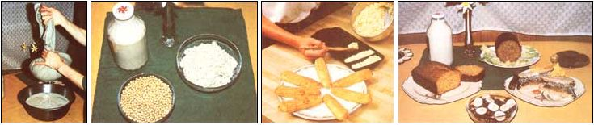

Largely unknown in our country, this wonder food deserves top billing!
Okara. Oh-kar'-ah. The name is unfamiliar to most people in the United States, but it ought to be as well known as sweet corn! Nutty-flavored, low in fat, and high in protein and fiber, this versatile bean meal is possibly the most nutritious and inexpensive food available to the American consumer today.
Okara is a by-product of the making of all soy "dairy" foods. After the soaked beans are ground to a fine mash and cooked in water, the strained concoction yields soymilk and okara in a 2:1 ratio. In commercial operations, the creamy liquid is used to make bean ice cream, soy yogurt, and tofu ... but the nutritious meal is frequently given away as livestock feed.
Lucky critters! According to William Shurtleff, coauthor of The Book of Tofu, okara contains a higher-quality protein than its sister soy foods: tofu, soymilk, and soy whey. You see, although the pulp retains only about 170% of the original protein, the amino acids in it are more equally balanced, thereby forming a complete and very absorbable protein. Calculations done by Frank and Rosalie Hurd, the authors of Ten Talents, reveal that just one cup of moist pulp contains approximately seven grams of protein, or about as much as one large egg. And that same cup offers you substantial amounts of iron, calcium, phosphorus, and vitamin A ... in a mixture that's extremely high in fiber and almost devoid of fat.
HOW TO USE IT, WHERE TO GET IT
Third World peoples who cook with soybeans commonly dry the strained meal, grind it into flour, and use it as we do wheat flours (although okara contains no gluten). However, in this country, most soy products are "disguised" in commercial preparations, and very few are actually used in home kitchens. (The underappreciated soybean has only recently been welcomed at the U.S. dinner table, and it still suffers from an "image problem".) Consumers are just beginning to cook with tofu and to season with miso. And okara? Why, that sounds too exotic for most Westerners to even consider using. As a result, the ever-increasing number of American soy-food factories simply cannot market all of the bean meal they produce. Michigan tofu-maker Pam Klingbail, for instance, uses a small portion of her bean pulp to make a tasty "soysage" (soy sausage). Some of the remaining mash is also given away to bakers ... but most of it, she concedes, goes to farmers for high-class livestock feed.
What a pity, because-as the following recipes and suggestions will prove-okara can be added without hesitation to breads, cereals, and desserts. The unsung soy food-which, when dried and ground, can substitute for up to half the flour in baked goods-blends right in, contributing (in addition to nutritional value) moistness and perhaps a touch of nutlike flavor.
If you'd like to try this unique food, just contact a soy factory near you, and ask the business to save you a small bucketful of okara. (Query your grocer for the whereabouts of such an outlet. Or, if tofu has not yet arrived at your neighborhood supermarket, inquire at the local health food store or co-op.) And since the meal will be free-or, at most, cost 20c to 25c a pound-remember to provide the bucket yourself ... it's the least you can do.
Then again, should all your efforts to locate leftover okara fail, you can simply break down and make some yourself (see the accompanying sidebar). It's definitely worth the effort: One pound of dried legumes, at a cost of about 30c, will give you a half-gallon of nutritious soy mash and one gallon of creamy milk.
OKARA TREATS
Depending on where you acquire your okara, the moisture content will vary: Obviously, hand-squeezed pulp will have more liquid left in it than will machine-pressed mash. The recipes below call for the moister, hand-pressed pulp ... so if you're using a drier batch, you should cook the treats 5 to 10 minutes less.
Since these dishes are intended to be nutritious as well as delicious, all of the recipes call for whole wheat rather than white flour, barley malt extract (see the Editor's Note) as well as honey or sugar, and soymilk in place of cow's milk. If your kitchen isn't stocked with these items, however, feel free to do some reverse substituting.
CRUNCHY CAROBOLA
This treat tastes just like a chocolate cereal, but it's good for you! The recipe makes about a gallon of the crunchy snack ... which 'is tasty when eaten by the handful or served with milk as a breakfast food.
6 cups of okara
1 cup of peanuts
1 cup of sesame seeds
1/2 cup of carob powder
1 cup of raw wheat germ
2/3 cup of vegetable oil
1 cup of honey
1 cup of barley malt extract
3 cups of rolled oats
1 cup of sunflower seeds
1 cup of shredded coconut
1 teaspoon of salt
1 tablespoon of vanilla extract
1 tablespoon of almond extract
Mix all of the ingredients thoroughly. Spread the mixture thinly on shallow pans or cookie sheets and bake it at 300'F for 45 minutes, stirring every 10 to 15 minutes.
APPLE ANARCHY
These loaves of fruity "upside down" cake are delicious with coffee or tea.
4 cups of sliced apples
1/2 tablespoon of cinnamon
1/2 cup of raisins
1/3 cup of whole wheat pastry flour
1/4 cup of honey
1/4 cup of lemon juice
Combine the ingredients and pat the mixture into the bottom of two well-oiled bread pans. Then set them aside while you work on the cake portion.
3 tablespoons of margarine
1/8 cup of vegetable oil
1/2 cup of barley malt extract
1/2 cup of honey
2 well-beaten eggs
1 cup of soymilk
2 cups of okara
2 cups of whole wheat pastry flour
3 teaspoons of baking soda
1 teaspoon of cinnamon 1/2 teaspoon of nutmeg 1/2 teaspoon of powdered cloves 1/2 teaspoon of powdered ginger
Cream together the margarine, oil, barley malt extract, and honey. Then, one at a time, add the eggs, soymilk, and okara, stirring after each ingredient. Now, in a separate bowl, sift together the dry ingredients.
Combine the moist and dry fixings, stirring well. Pour this over the apple mix and bake the loaves at 350'F until the center of each loaf springs back when touched lightly (about 50 minutes).
SOYBURGER SUPREME
A "tasteful" way to get rid of leftovers, this makes eight medium burgers.
2 beaten eggs
1 tablespoon of soy sauce
2 tablespoons of catsup
2 tablespoons of parsley flakes
1 small onion, chopped fine
1 cup of okara
3 tablespoons of nutritional yeast
2 tablespoons of oil or nut butter
1 teaspoon of salt
1/2 teaspoon of garlic powder
1 teaspoon of mustard powder
1/2 teaspoon of black pepper
1 cup of whole wheat flour
1 cup of cooked red beans, rice, oatmeal, potatoes, or leftover vegetables mashed to add bulk and flavor. (Raid the refrigerator!) hot sauce to taste
3 tablespoons of sesame seeds Combine all of the ingredients except the sesame seeds.
Grease a skillet lightly and heat it until it's medium-hot. Next, sprinkle the pan with sesame seeds, and drop in hamburger-sized circles of batter. Sprinkle more sesame seeds on top. Cover and cook the rounds until they're just barely solid. Then turn the patties and brown their other sides. Put the burgers into warm onion buns and smother them with your favorite condiments.
RAISIN-SOY COOKIES.
2 cups of whole wheat pastry flour
1/2 teaspoon of salt
3 teaspoons of baking soda
2 teaspoons of cinnamon
1 teaspoon of allspice
1/2 cup of margarine
1-1/2 cups of raw or brown sugar
1/2 cup of barley malt extract
2 well-beaten eggs
3 cups of okara
1 teaspoon of vanilla extract
1 cup of raisins
1/2 cup of sunflower seeds or chopped walnuts
Sift together the flour, salt, baking soda, cinnamon, and allspice several times. Next, in a different bowl, cream the margarine, sugar, and malt extract. When this mix is smooth, blend in the eggs, then add the okara and vanilla extract. Combine the contents of both bowls and stir the ingredients well before adding the raisins and sunflower seeds or nuts. Bake spoonfuls of the mix on greased cookie sheets at 425'F for 15 minutes. Remove the cookies from the oven and coot them on brown paper to absorb any excess oil. This recipe should yield about 6 dozen moist, half-dollar-sized cookies.
NO-MEA T SAUSAGE ROLLS
This recipe makes two round loaves of country sausage that's delicious when fried with eggs or sliced in sandwiches.
2 cups of whole wheat flour
3/4 cup of vegetable oil
1 cup of nutritional yeast
1/4 cup of soy sauce
1 small onion, diced fine
1 teaspoon of crushed sage
1/4 cup of molasses
3 teaspoons of parsley flakes
4 cups of okara
1 cup of wheat germ
1 cup of soup stock, whey, or water
1 teaspoon of black pepper
2 teaspoons of sea salt
2 teaspoons of garlic powder
3 teaspoons of crushed thyme
1/2 teaspoon of powdered rosemary
Combine all of the ingredients, mixing them well, and squish them into two well-oiled two-pound-sized coffee cans. Bake them at about 300'F for 1-1/2 hours or until they're firm. If you like a crusty top (I consider it the best part), leave the cans uncovered. If you prefer a completely soft sausage roll, cover the tins with aluminum foil while they're cooking. Whichever you do, though, be sure to let the rolls cool completely before removing them from the cans, so they don't crumble. You also may wish to vary the oven temperature. Baking the loaves at 2501 to 300'F will result in a very soft sausage that's especially good when fried for breakfast. Cooking at up to 400'F will give you a firm sausage ... just the thing for slicing in sandwiches or using as an appetizer.
OKARA CORN BREAD
This easy recipe makes two small loaves of moist, delicately sweetened bread. What's more, the cornmeal and soy pulp complement each other to form a high-protein meal.
2 cups of cornmeal
2 teaspoons of baking soda
1 teaspoon of salt
2 beaten eggs
2 cups of soymilk
3 tablespoons of barley malt extract
1 tablespoon of vegetable oil
3 cups of okara
In a bowl, stir together the cornmeal, soda, and salt. In another bowl, blend the eggs, soymilk, barley malt extract, and oil. When the wet mixture is well blended, add the okara and pour the wet ingredients over the dry ones ... stirring 'this batter just enough to moisten everything.
Next, spoon or pour the mixture into two well-greased bread pans and bake the loaves at 425'F for 30 minutes or until they're firm in the center. Then slather the slices with butter and honey and serve them warm.
ON YOUR OWN!
Now, it's your turn to experiment! Remember that okara may be added to almost any yeast or quick bread to provide fiber, protein, and a subtle, nutty taste. The mash makes a perfect hamburger or meat loaf extender (even the butchers are catching on to this one). And, when dried and stored in a cool, dark place, it will last up to a year and may be used as is in recipes ... or ground and used like a (nongluten) flour.
And when you've stretched your culinary capacities to the limit and still have an abundance of okara, well ... there are always your hungry pets and livestock animals!
EDITOR'S NOTE:Barley malt extract is a fine sweetener, with more nutrients than honey and none of its strong flavor. It's more digestible than refined sugar, corn syrup, or similar liquids, too, and it's relatively inexpensive (in the author's area, 50c per pound). Check Your local health food store or co-op for availability.
When testing author Prescott's recipes, MOTHER's editor used Dr. Bronner's Barley Malt Sweetener, a granular substance many times more powerful than sugar. For those readers who wish to try this substance, the proportions we liked were in the vicinity of 1:3-that is, 1 teaspoon of Dr. Bronners product if the recipe called for 3 teaspoons of malt extract-but the precise. amounts you choose will naturally depend on individual taste.
Our thanks to Mr. and Mrs. John Vernon of Blue Ridge Soyfoods, Fletcher, North Carolina for their generous contributions of time, information, and fresh okara!
This recipe makes 1 gallon of soymilk and 112 gallon of okara.
Soak 2-1/2 cups of raw soybeans for 12 hours, changing the water every 3 or 4 hours in warm weather. Soybeans ferment quickly, so if a foam develops on the surface of the water, don't panic ... the legumes are still usable. Just skim the foam off the top, rinse the beans, and proceed. (The batch will yield a slightly - thinner milk, that's all.)
After 12 hours, strain the beans. Add 1 cup of the soaked legumes to 2-1/2 cups of fresh warm water in a blender, and whirl it at high speed for 30 seconds. Continue to puree the rest of the beans-using the same proportions-until all of the legumes have been liquified. Then cook this mash in a heavy covered pot on medium-low heat, stirring frequently, until it begins to boil.
Keep alert: The fast-foaming milk will bubble over the top of the pan before you know it. Indeed, it should foam up several times when it first starts boiling. Then turn the heat down to low and let the liquid simmer slowly for 45 minutes. Stir the slow cooking mash every 5 minutes or so to prevent it from boiling over. Next, remove the soy slury from the stove and set the pot in a sink containing cold water. Keep the water around the pan chilled until the milk is just warm. (The more quickly soymilk cools, the longer it will keep.) As soon as the mix reaches a "touchable" temperature. strain it through a clean cloth. An old cotton pillowcase ... several layers of food-safe cheesecloth ... or any other fabric that's dense enough to prevent the mash from seeping through, but thin enough to allow the milk to flow, will work fine for this purpose.
Close the top of your cloth and begin twist ing it to force the juice through the bag. When you have little more than a mushy ball left, squeeze gently so as not to force any pulp through the fabric.
Bottle the strained milk in sterile glass jars, adding a teaspoon of honey per quart of milk. The sweetener should melt right into the stillwarm liquid. I've found that milk remains fresh for approximately a week when it Is kept in several small containers that are used one at a time. (It should last over a week when it's stored at temperatures that are close to freezing.)
Now, dump your okara into a small plastic bucket or wide-mouthed glass jar. The mash also keeps for about a week in the refrigerator. It's sweetest and best in dessert dishes the first 3 to 5 days ... after that, it tends to get a slight tang and tastes better in yeasted breads, Mexican corn bread, or sausage mixes. If you have any remaining after a week, mix it with some leftovers and give your animals a feast ... or compost it. (Heed one word of warning. Okara is an excellent soil amendment, but, like any bean product, it ferments strongly. Therefore, don't leave it sitting around in large lumps I . . unless you have lost your sense of smell! Break up any clumps and sprinkle the meal thinly into your garden or compost.)
To obtain some more food for thought on this subject, you might want to consult the following sources:
[1] The Farm Vegetarian Cookbook edited by Louise Hagler is available for $6.00 plus $1.00 shipping and handling from The Book Publishing Company, Dept. TMEN, 156 Drakes Lane, Surnmertown, Tennessee 38483. Ms. Hagler has also edited Tofu Cookery, available from Mother's Bookshelf' (105 Stoney Mountain Road, Hendersonville, North Carolina 28791) for $9.95 plus $1.25 shipping and handling.
[2]The Book of Tofu by William Shurtleff and Akiko Aoyagi gives detailed information on making soymilk and tofu, plus numerous ideas for cooking with okara. It may be ordered from The Soyfoods Center, Dept. TMEN, P.O. Box 234, Lafayette, California 94549. The cost is $2.95 plus 90c postage and handling.
[3]Ten Talents by Frank and Rosalie Hurd is perhaps the earliest cookbook published in this country to make extensive use of soy products and by-products. It may be purchased from the Hurds (Dept. TMEN, Box 86-A, Route 1, Chisholm, Minnesota 55719) for $9.95 plus $1.50 shipping and handling.
Many health food stores and co-ops also carry these books.
|
 FROM UPPER LEFT Squeezing soymilk from cooked soybean/water mash .... Raw soybeans (front), moist okara (right), and creamy soymilk (left). ... Cornsticks .... An okara sampling (clockwise from top left). soymilk, no-meat sausage roll, raisin-soy cookies, soyburger supreme, carobola, and a cornbread loaf. |
|
|